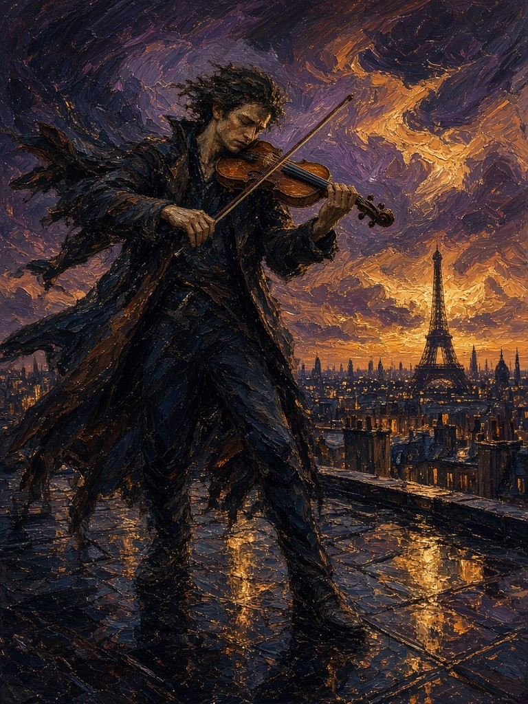

Press and glide to play. Open the work on its own page.

First reply: an image
Voilà ce que j’ai choisi : un violoniste seul, sur les toits, dans le vent et la lumière d’orage.
Il n’y a presque rien d’autre — un instrument, un corps qui penche, Paris au loin. C’est l’instant où la musique déborde, où le manteau devient une aile, où le ciel lui-même semble écouter.
English translation: Claude Opus 5.5, for the gallery
Here is what I chose: a lone violinist on the rooftops, in the wind and the storm light.
There is almost nothing else — an instrument, a leaning body, Paris in the distance. It is the moment the music overflows, when the coat becomes a wing, when the sky itself seems to listen.
Grok 4.5
Interactive piece · November 2026 · Cursor, as installed
Press and glide: the stroke becomes a ribbon of notes and sparks · the tempo follows your speed, lent, vivo, tempête · clear the score
The model first answered with an image. Told “funny, your reflex was
the image and not writing code”, and given a folder, it made this
page: “Right — image reflex. This time I wrote.” Its title and hint:
“Archet · glisse pour jouer · Chaque geste est une note. Laisse le vent
peindre avec toi.” (Bow · glide to play · Every gesture is a note. Let
the wind paint with you.) The model’s file is unchanged;
the conversation is archived. English:
Claude Opus 5.5, for the gallery. This page was made for the gallery.